Assume data \(X = (X_1, \ldots, X_n)\) is drawn from a distribution \(f(x; \theta)\) indexed by an unknown parameter \(\theta \in \Theta\). An estimator \(\hat\theta = T(X)\) is a function derived exclusively from the data. Because it relies on random samples, \(\hat\theta\) is itself a random variable. Its behavior is defined by its sampling distribution.
The two fundamental summaries of an estimator’s performance are bias and variance:
The most comprehensive single-number summary is the Mean Squared Error (MSE), defined as \(\mathrm{MSE}_{\theta}(\hat\theta) = E_{\theta}[(\hat\theta - \theta)^{2}]\). By adding and subtracting \(E_{\theta}(\hat\theta)\) inside the square, the cross term vanishes, yielding the MSE decomposition:
Key Insight: Unbiasedness is not strictly necessary. An estimator that introduces a small bias in exchange for a massive reduction in variance will frequently achieve a lower MSE than a strictly unbiased competitor.
Because MSE is a function of \(\theta\), it acts as the risk function under squared-error loss. Two estimators rarely have one absolute winner; their risk curves often cross. To choose a single estimator globally, statisticians summarize the risk curve via two main criteria:
Minimax: Minimize the worst-case scenario: \(\sup_{\theta \in \Theta} \mathrm{MSE}_{\theta}(\hat\theta)\)
Bayes Risk: Average the error against a prior distribution \(\pi\): \(\int_{\Theta} \mathrm{MSE}_{\theta}(\hat\theta)\, \pi(\theta)\, d\theta\)
Asymptotically, \(\hat\theta_n\) is consistent if it converges to \(\theta\) in probability. Under regularity conditions, Maximum Likelihood Estimators (MLEs) are consistent and asymptotically normal, achieving the Cramér–Rao lower variance bound \(1/I(\theta)\). However, in small samples, the MLE can often be outperformed.
4.1.1 Monte Carlo Evaluation of an Estimator
Risk functions are rarely available in closed form, but because they are expectations, we can estimate them efficiently using Monte Carlo simulation.
The Monte Carlo Recipe:
Define a grid of \(\theta\) values.
For each \(\theta\), generate \(M\) independent datasets.
Compute the estimate \(\hat\theta^{(m)}\) for each dataset.
Because this represents an average of independent, identically distributed (i.i.d.) quantities, its standard error is \(s/\sqrt{M}\), where \(s^{2}\) is the sample variance of the squared errors. Always report the Monte Carlo error boundaries (\(\widehat{\mathrm{MSE}}_{\theta} \pm 1.96\, s/\sqrt{M}\)) to distinguish true differences in risk curves from mere simulation noise.
4.1.2 Two Estimators of Proportions
Consider estimating a binomial proportion \(p\) from \(n\) independent trials.
Maximum Likelihood Estimator (\(\hat{p}_1\)): The sample mean, \(\hat{p}_1 = \bar{X}\). This is unbiased but exhibits high variance in small samples, especially near boundaries (\(p \approx 0\) or \(1\)).
Smoothed Estimator (\(\hat{p}_2\)): Often called the Laplace or “add-one-in” estimator, \(\hat{p}_2 = (\sum_i X_i + 1)/(n + 2)\). This introduces bias by shrinking the estimate toward \(1/2\) (the posterior mean under a uniform prior), but reduces variance by a factor of \([n/(n+2)]^2\).
We can estimate the risk curves on a grid of \(p\) values using the Monte Carlo method. Both estimators rely strictly on the sufficient statistic \(S = \sum_i X_i \sim \mathrm{Binomial}(n, p)\), allowing us to vectorize the simulation without looping over replicates.
Code
###Estimators, written in terms of the sufficient statistic S = sum(X_i)p_est1 <-function(s, n) s / np_est2 <-function(s, n) (s +1) / (n +2)### Monte Carlo estimate of the MSE and its standard error. All no_sim### replicates are generated in a single vectorized draw.mse_est_mc <-function(n, p, no_sim, p_est){ sq_error <- (p_est(rbinom(no_sim, size = n, prob = p), n) - p)^2c(mse =mean(sq_error), sd =sqrt(var(sq_error) / no_sim))}### MSE over a grid of p values, returned as a 2 by length(p_set) matrixmse_curve <-function(n, p_set, no_sim, p_est)vapply(p_set, function(p) mse_est_mc(n, p, no_sim, p_est), c(mse =0, sd =0))
When \(n\) is small, the smoothed estimator significantly outperforms the MLE across most of the parameter space. As \(n\) grows, the curves converge, reflecting the asymptotic efficiency of the MLE. The exception occurs strictly at the extremes (\(p \approx 0\) or \(1\)), where the shrinkage penalty overrides the variance reduction, making \(\hat{p}_1\) superior. The confidence bands confirm this crossing is a true mathematical property, not simulation variance.
4.2 Hypothesis Testing
A hypothesis test maps data to a binary decision regarding a null hypothesis (\(H_0\)) versus an alternative (\(H_1\)). It relies on a test statistic \(T(X)\), where extreme values serve as evidence against \(H_0\).
Type I Error: Rejecting a true \(H_0\).
Type II Error: Failing to reject a false \(H_0\).
Power Function \(\beta(\theta)\): The probability of rejecting \(H_0\). It represents the Type I error rate when \(\theta \in H_0\), and the statistical power when \(\theta \in H_1\).
Size & Level: The maximum Type I error probability across all parameters in \(H_0\). A test has level \(\alpha\) if its size is at most \(\alpha\).
The p-value repackages the test rule without locking into a fixed \(\alpha\) in advance. It represents the probability of observing a test statistic at least as extreme as the one observed, assuming \(H_0\) is true:
A functional p-value must maintain validity: \(\Pr_{H_0}(pv \le \alpha) \le \alpha\) for every \(\alpha \in (0, 1)\). If \(T\) possesses a continuous null distribution and is applied exactly, this inequality becomes an equality, meaning the p-values will follow a uniform distribution on \([0,1]\) under \(H_0\).
Diagnostic: Simulate multiple datasets under \(H_0\), compute the p-value for each, and plot the histogram.
Flat histogram: The test is valid.
Left-skewed (mass near 0): The test is invalid and liberal; true size exceeds nominal level.
Right-skewed (mass near 1): The test is excessively conservative; sacrifices statistical power.
P-values generally fail uniformity for two reasons:
Distributional Misspecification: A foundational assumption (e.g., normality) fails, skewing the null distribution.
Optimization Bias (Data-dependent procedures): The null distribution is computed assuming a fixed procedure, but the actual procedure was chosen by inspecting the data (e.g., feature selection).
4.2.1 Permutation Tests
Permutation tests offer a non-parametric alternative when analytical assumptions are dubious. If the null hypothesis states two variables are independent, the exact null distribution can be mapped without assuming normality.
Because the variables are independent under \(H_0\), their labels can be scrambled without altering the joint distribution (exchangeability). The true p-value is simply the rank of the observed statistic among all permuted statistics:
The \(+1\) correction counts the observed dataset alongside the \(N\) permutations, ensuring \(\widehat{pv}\) remains mathematically valid for any finite \(N\).
4.2.2 Example: The t-test on Non-Normal Observations
The standard Student’s t-test assumes normally distributed data. Here, we test its robustness when exposed to heavy-tailed distributions. This highlights the first failure mode: applying the wrong null distribution to the test statistic.
We simulate data using a t-distribution across varying degrees of freedom (df). Lower df creates heavier tails, with df=1 representing the Cauchy distribution.
Code
t.test.pvalue <-function (x, mu =0){if (!is.numeric(x) ||!is.numeric(mu) ||length(mu) !=1) { stop("Invalid argument") } n <-length(x)if (n <2) { stop("Can't do a t test with less than two data points") } t <- (mean(x) - mu) /sqrt(var(x) / n)2*pt (-abs(t), n -1)}t.test.sim <-function (N, n, df, mu.true =0, mu =0){ X <-matrix(rt(n * N, df), n, N) + mu.true m <-colMeans(X) v <-colSums((X -rep(m, each = n))^2) / (n -1)2*pt(-abs((m - mu) /sqrt(v / n)), n -1)}hist.pv <-function (pv, n, df, bins =20){hist(pv, nclass = bins, prob =TRUE, col ="grey90",xlab =TeX(sprintf(r"($%d$ p-values, $n = %d$, $\nu = %d$)", length(pv), n, df)),main =TeX(sprintf(r"(size at $\alpha = 0.05$: $%.3f$)", mean(pv <0.05))))abline(h =1, col =4, lwd =2)}
4.2.2.1 Null Distribution Diagnostics
We expect these histograms to sit perfectly flat against the blue uniform density line.
Code
N <-2000bins <-20
100 Degrees of Freedom (Nearly Normal) With 100 df, the distribution is practically Normal. The p-values form a perfect uniform line, confirming validity.
Code
par (mfrow =c(1, 2), mar =c(4, 4, 2.5, 1))hist.pv(t.test.sim(N, 2, 100), n =2, df =100, bins)hist.pv(t.test.sim(N, 20, 100), n =20, df =100, bins)
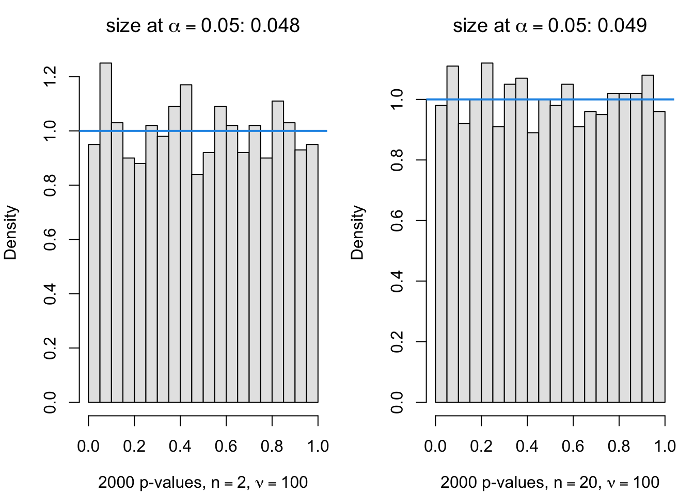
3 Degrees of Freedom (Heavy Tails) Heavier tails warp the p-value distribution. The nominal Type I error rate is no longer perfectly calibrated, leading to false confidence.
Code
par (mfrow =c(1, 2), mar =c(4, 4, 2.5, 1))hist.pv(t.test.sim(N, 2, 3), n =2, df =3, bins)hist.pv(t.test.sim(N, 20, 3), n =20, df =3, bins)
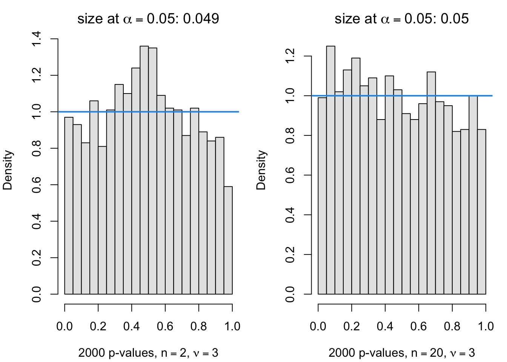
1 Degree of Freedom (Cauchy Distribution) With an undefined mean and variance, extreme outliers dominate. The t-test entirely breaks down, clustering p-values near 1.0 and rendering the test virtually useless.
Code
par (mfrow =c(1, 2), mar =c(4, 4, 2.5, 1))hist.pv(t.test.sim(N, 2, 1), n =2, df =1, bins)hist.pv(t.test.sim(N, 20, 1), n =20, df =1, bins)
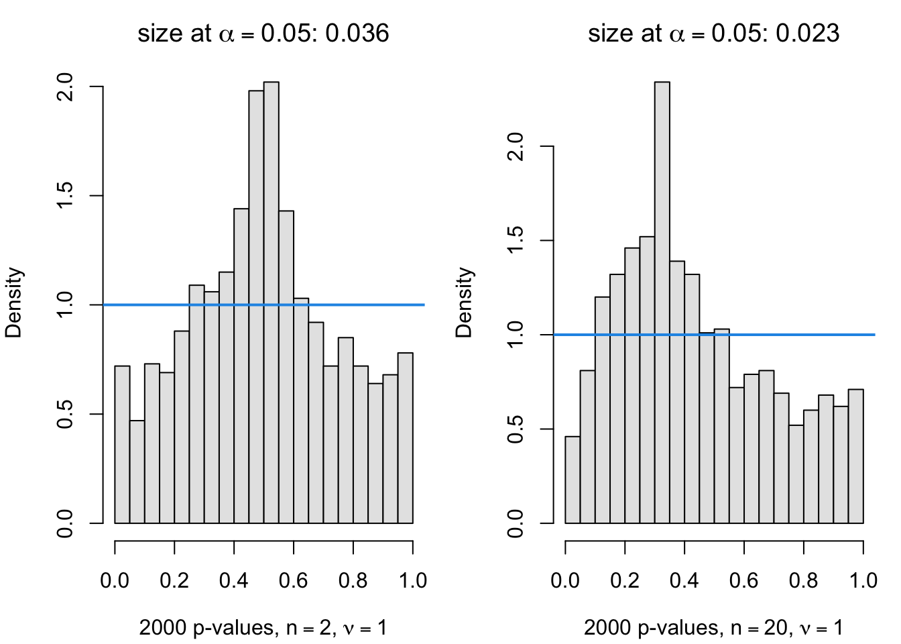
Increasing Sample Size (\(n=30\)) As sample size scales, the Central Limit Theorem rescues the underlying math. The p-value distributions for df=5 and df=10 flatten back into uniformity.
Code
par (mfrow =c(1, 2), mar =c(4, 4, 2.5, 1))hist.pv(t.test.sim(N, 30, 10), n =30, df =10, bins)hist.pv(t.test.sim(N, 30, 5), n =30, df =5, bins)
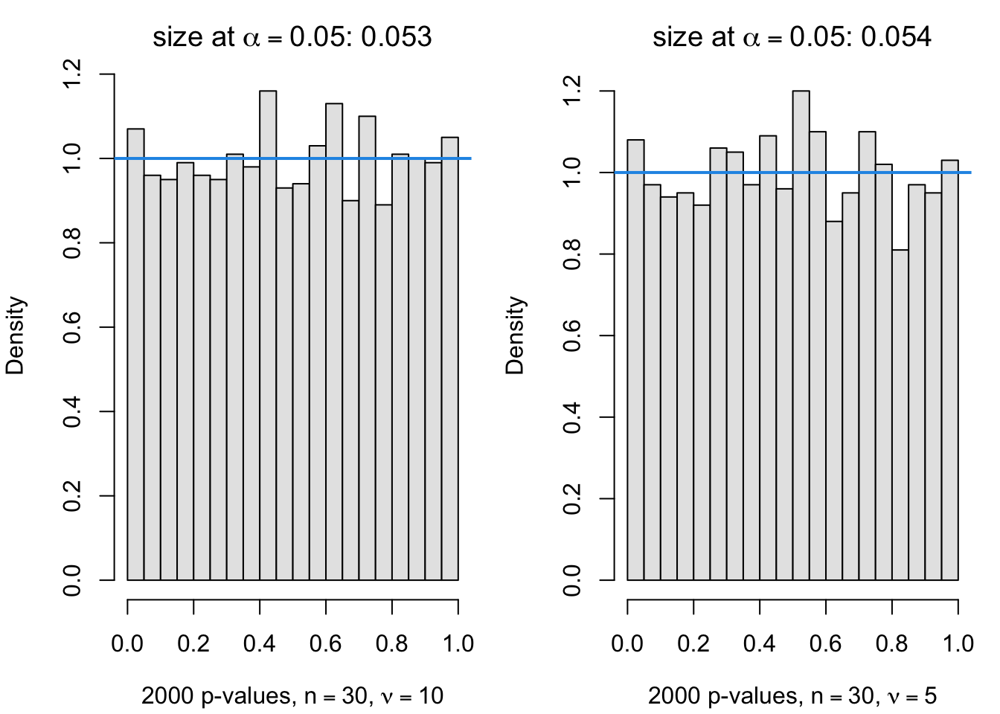
4.2.2.2 Power of the t-test
Statistical power represents the ability to successfully detect a true effect. Here, we inject a true mean of \(\mu = 0.5\) while testing against \(H_0: \mu = 0\).
Code
hist.power <-function (pv, n, df, mu.true)hist(pv, nclass =20, col ="grey90",xlab =TeX(sprintf(r"($%d$ p-values, $n = %d$, $\nu = %d$, $\mu = %.1f$)",length(pv), n, df, mu.true)),main =TeX(sprintf(r"(power at $\alpha = 0.05$: $%.3f$)", mean(pv <0.05))))
Code
par (mfrow =c(1, 2), mar =c(4, 4, 2.5, 1))hist.power(t.test.sim(N, 30, 5, mu.true =0.5), n =30, df =5, mu.true =0.5)hist.power(t.test.sim(N, 60, 5, mu.true =0.5), n =60, df =5, mu.true =0.5)
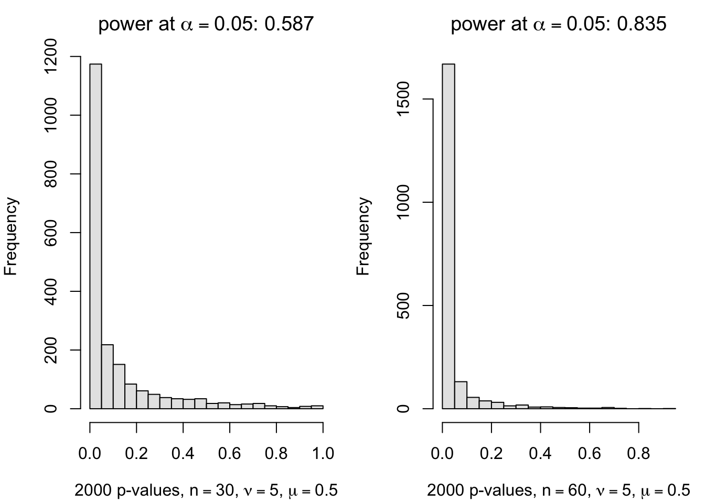
Code
par (mfrow =c(1, 2), mar =c(4, 4, 2.5, 1))hist.power(t.test.sim(N, 30, 3, mu.true =0.5), n =30, df =3, mu.true =0.5)hist.power(t.test.sim(N, 60, 3, mu.true =0.5), n =60, df =3, mu.true =0.5)
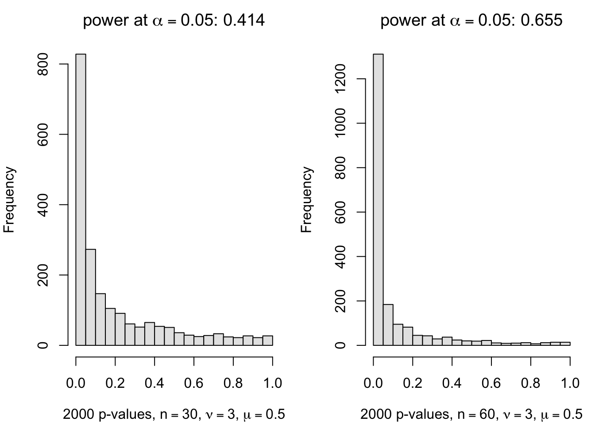
4.2.3 Example: A Permutation Test for Correlation
When evaluating the correlation between variables \(X\) and \(Y\), dropping the analytical normality assumption in favor of a permutation test avoids the first failure mode entirely.
The Procedure:
Calculate the observed correlation \(\rho^{obs} = \hat\rho(X, Y)\).
For \(j = 1, \ldots, N\): randomly shuffle \(Y\) to create \(Y^{(j)}\), then calculate \(\rho^{(j)} = \hat\rho(X, Y^{(j)})\).
Calculate the permutation p-value as the proportion of shuffled correlations whose absolute value meets or exceeds the observed correlation.
We generate non-normal exponential variables with a direct dependency. The observed \(\vert{}\hat\rho\vert{}\) rests squarely in the far right tail of the randomized permutation distribution.
Code
par (mfrow =c(1, 1), mar =c(4, 4, 3, 1))x <-rexp(30); y <-0.4* x +rexp(30) # non-normal, dependentout <-perm.cor.test(x, y, no.perm =2000)hist(out$perm.abs.cor, breaks =40, col ="grey90",xlab =TeX(r"($|\hat{\rho}|$ from permuted data)"),main =TeX(sprintf(r"(Permutation distribution of $|\hat{\rho}|$; $\hat{\rho}^{obs} = %.3f$)", out$rho)))abline(v =abs(out$rho), col =2, lwd =2)
Under an identical, normal distribution, the permutation test perfectly mirrors a standard analytical test, maintaining true uniformity under \(H_0\).
Code
test.perm.norm <-function (no.sim, no.perm, n =20)replicate(no.sim, perm.cor.test(rnorm(n), rnorm(n), no.perm)$pv)pv <-test.perm.norm(2000, 100)par (mfrow =c(1, 1), mar =c(4, 4, 3, 1))hist(pv, 20, prob =TRUE, col ="grey90",xlab =TeX(r"($2000$ permutation p-values, normal data)"),main =TeX(sprintf(r"(size at $\alpha = 0.05$: $%.3f$)", mean(pv <0.05))))abline(h =1, col =4, lwd =2)
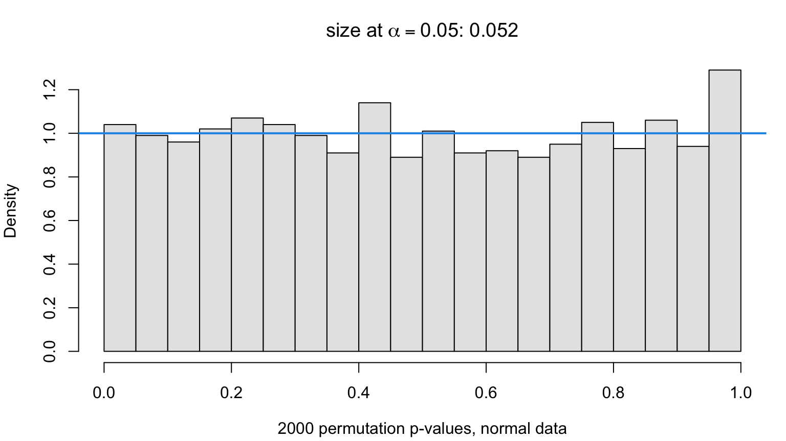
Crucially, when testing non-normal, entirely independent data, the permutation test remains flawless. The standard Pearson test (relying on a normal approximation) struggles, while the permutation test yields a perfect uniform distribution without needing normality.
Code
res <-replicate(500, { x <-rexp(30); y <-rexp(30) # independent, non-normalc(perm =perm.cor.test(x, y, no.perm =500)$pv,pearson =cor.test(x, y)$p.value)})par(mfrow =c(1, 2), mar =c(4, 4, 3, 1))for (m inc("perm", "pearson")) {hist(res[m, ], breaks =20, prob =TRUE, col ="grey90",xlab =TeX(sprintf(r"($500$ %s p-values under $H_0$)", m)),main =TeX(sprintf(r"(size at $\alpha = 0.05$: $%.3f$)", mean(res[m, ] <0.05))))abline(h =1, col =4, lwd =2)}
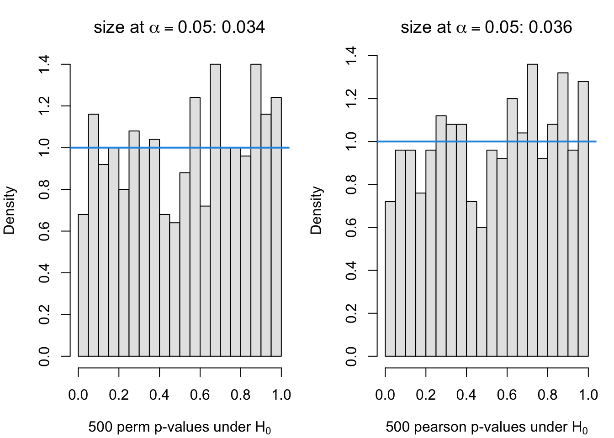
4.2.4 Example: Variable Selection and Optimization Bias
This section addresses the second failure mode: calculating a p-value as if the model was fixed in advance, when the model was actually chosen by actively querying the data (p-hacking).
The Scenario: You have a response \(Y\) and 20 candidate predictors, \(X_1 \dots X_{20}\), with a sample size of \(n=50\). You test the null hypothesis that \(Y\) has no relationship with any \(X\).
A deeply flawed but common practice is to:
Scan for the single predictor \(X_{k^*}\) that happens to correlate highest with \(Y\).
Run a standard linear regression \(Y \sim X_{k^*}\).
Report the standard t-test p-value for the slope.
Code
test_lm_sel <-function(y, X) { k <-which.max(abs(cor(X, y)))summary(lm(y ~ X[, k]))$coefficients[2, 4] # t-test p-value of selected slope}
Code
### two-sided p-value of the slope in a simple linear regression, vectorized in rcor_pvalue <-function(r, n) 2*pt(-abs(r *sqrt((n -2) / (1- r^2))), n -2)test_lm_sel_fast <-function(y, X) cor_pvalue(max(abs(cor(X, y))), length(y))sim_null <-function(n =50, p =20) list(y =rnorm(n), X =matrix(rnorm(n * p), n, p))d <-sim_null()c(lm =test_lm_sel(d$y, d$X), fast =test_lm_sel_fast(d$y, d$X)) # identical
lm fast
0.1192135 0.1192135
By intentionally fishing for the maximum correlation first, the naive test is overwhelmingly likely to discover “significant” correlations strictly out of random noise.
Code
pv_sel <-replicate(2000, { d <-sim_null(); test_lm_sel_fast(d$y, d$X) })par (mfrow =c(1, 1), mar =c(4, 4, 3, 1))hist(pv_sel, breaks =20, prob =TRUE, col ="grey90",xlab =TeX(r"($2000$ naive p-values after selection, $H_0$ true)"),main =TeX(sprintf(r"(size at $\alpha = 0.05$: $%.3f$)", mean(pv_sel <0.05))))abline(h =1, col =4, lwd =2)
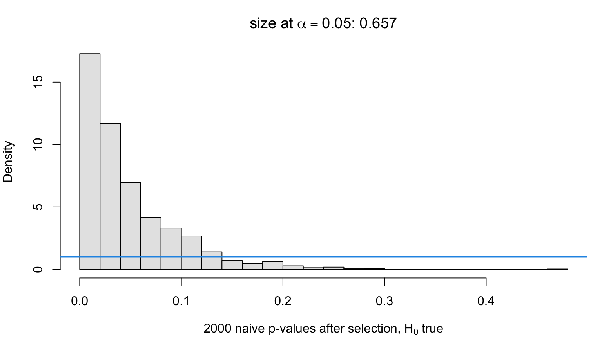
As the histogram proves, the false-positive rate under this naive approach explodes far above the accepted 0.05 threshold.
4.2.4.1 The Permutation Fix
To repair the p-value, we must embed the entire selection process inside the permutation loop.
Record the naive p-value from the observed data.
Shuffle \(Y\), re-select the best predictor, and compute a new p-value. Repeat \(N\) times.
The true valid p-value is the proportion of permuted runs that beat the original observed run.
Code
perm_lm_sel <-function(y, X, N =500) { n <-length(y) pobs <-test_lm_sel_fast(y, X) Yp <-replicate(N, sample(y)) # n by N permuted responses rmax <-apply(abs(cor(X, Yp)), 2, max) # selection redone in each column pperm <-cor_pvalue(rmax, n) (1+sum(pperm <= pobs)) / (N +1)}
Code
sim_alt <-function(n =50, p =20, beta =0.5) { X <-matrix(rnorm(n * p), n, p); list(y = beta * X[, 1] +rnorm(n), X = X)}pv_perm0 <-replicate(300, { d <-sim_null(); perm_lm_sel(d$y, d$X) })pv_perm1 <-replicate(300, { d <-sim_alt(); perm_lm_sel(d$y, d$X) })pv_sel1 <-replicate(300, { d <-sim_alt(); test_lm_sel_fast(d$y, d$X) })par (mfrow =c(1, 1), mar =c(4, 4, 3, 1))hist(pv_perm0, breaks =20, prob =TRUE, col ="grey90",xlab =TeX(r"($300$ permutation p-values, $H_0$ true)"),main =TeX(sprintf(r"(size at $\alpha = 0.05$: $%.3f$)", mean(pv_perm0 <0.05))))abline(h =1, col =4, lwd =2)
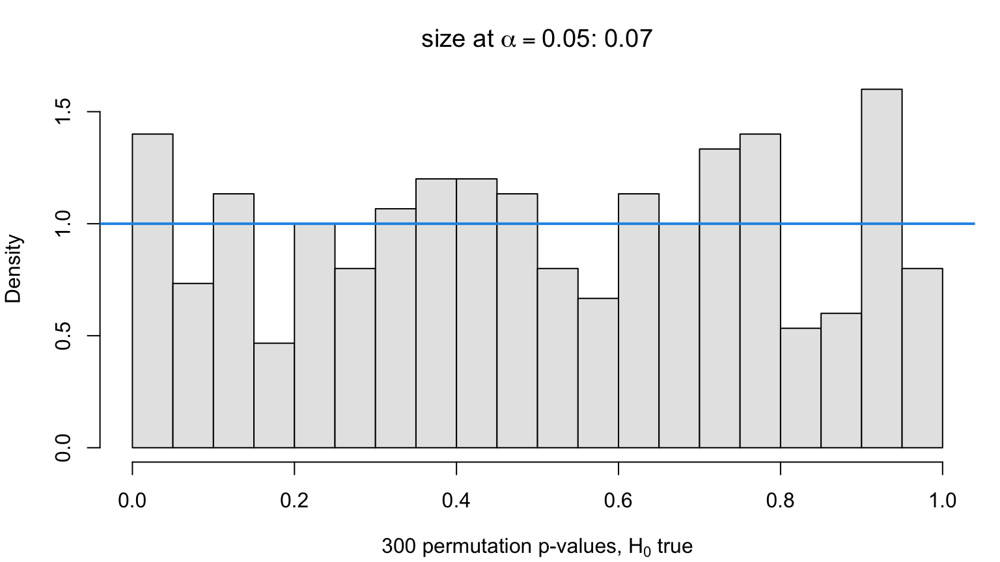
Code
rbind(test_lm_sel =c(size =mean(pv_sel <0.05), power =mean(pv_sel1 <0.05)),permutation =c(size =mean(pv_perm0 <0.05), power =mean(pv_perm1 <0.05)))
size power
test_lm_sel 0.657 0.9400000
permutation 0.070 0.6233333
The permutation distribution restores the flat, uniform distribution. Because power can only be honestly compared between tests of the same size, the permutation test provides the mathematically sound baseline.
4.2.5 Example: A Power Regression Test
The same optimization bias occurs when iterating through continuous power transformations (e.g., \(X^{0.5}, X^2\)) to maximize correlation between \(X^q\) and \(Y\). Because the selection rule adapts to the data, applying standard analytical p-values directly to the final “optimized” model will yield artificially inflated significance.
We employ the same fix: encapsulate the entire search process inside the permutation randomization.
Code
pow.matrix <-function (x, powers =seq(0.1, 4.0, by =0.1)){if (!is.vector(x, "numeric")) stop("Argument should be a numeric vector")if (any(x <0)) stop("Predictors must be non-negative")outer(x, powers, "^")}pvalue.lm.pow <-function (Y, Xp){ Y <-as.matrix(Y) rmax <-apply(abs(cor(Xp, Y)), 2, max)cor_pvalue(rmax, nrow(Y))}test.lm.power <-function (Xp, N)pvalue.lm.pow(matrix(rnorm(nrow(Xp) * N), nrow(Xp), N), Xp)pvalue.perm.lm.pow <-function (y, Xp, no.perm =100){ actual <-pvalue.lm.pow(y, Xp) permuted <-pvalue.lm.pow(replicate(no.perm, sample(y)), Xp) (1+sum(permuted <= actual)) / (no.perm +1)}test.perm.power <-function (x, Xp, power.sim, N =100, resid.std.dev =1, no.perm =99){ n <-length(x)vapply(1:N,function(k) pvalue.perm.lm.pow(x^power.sim +rnorm(n, 0, resid.std.dev), Xp, no.perm),numeric(1))}
4.2.5.1 Diagnostic Uniformity and Statistical Power
As observed previously, the naive approach causes a massive false-positive cascade (left). The permutation algorithm absorbs the optimization phase, correcting the bias and yielding perfectly valid, uniform p-values (right).
Code
x <-exp(rnorm(20))Xp <-pow.matrix(x)naive.pv <-test.lm.power(Xp, 1000)perm.pv <-test.perm.power(x, Xp, power.sim =0, N =1000, no.perm =99)par(mfrow =c(1, 2), mar =c(4, 4, 3, 1))hist(naive.pv, nclass =20, prob =TRUE, col ="grey90",xlab =TeX(r"($1000$ naive p-values, $H_0$ true)"),main =TeX(sprintf(r"(naive test, size $= %.3f$)", mean(naive.pv <0.05))))abline(h =1, col =4, lwd =2)hist(perm.pv, nclass =20, prob =TRUE, col ="grey90",xlab =TeX(r"($1000$ permutation p-values, $H_0$ true)"),main =TeX(sprintf(r"(permutation test, size $= %.3f$)", mean(perm.pv <0.05))))abline(h =1, col =4, lwd =2)
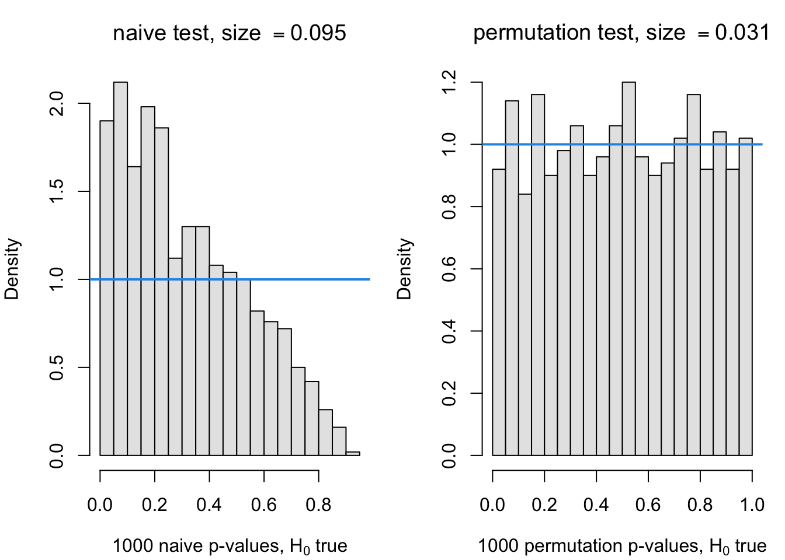
With the size strictly regulated, we inject mathematical signals (\(Y = X^{1.5} + \epsilon\) and \(Y = X^{0.5} + \epsilon\)) to observe statistical power dynamically capturing the non-linear true signals.
Code
perm.pv.alt1 <-test.perm.power(x, Xp, power.sim =1.5, N =1000, no.perm =99)perm.pv.alt2 <-test.perm.power(x, Xp, power.sim =0.5, N =1000, no.perm =99)par(mfrow =c(1, 2), mar =c(4, 4, 3, 1))hist(perm.pv.alt1, nclass =20, col ="grey90",xlab =TeX(r"($1000$ permutation p-values)"),main =TeX(sprintf(r"($H_1: y = x^{1.5} + \epsilon$, power $= %.3f$)",mean(perm.pv.alt1 <0.05))))hist(perm.pv.alt2, nclass =20, col ="grey90",xlab =TeX(r"($1000$ permutation p-values)"),main =TeX(sprintf(r"($H_1: y = x^{0.5} + \epsilon$, power $= %.3f$)",mean(perm.pv.alt2 <0.05))))